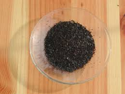

Il tenente Giovanni Drogo aspettò i Tartari invano.
Per tutta la vita li aspettò.
---°°°OOO°°°---
Stavolta non c'entrano i Tartari del capolavoro del Grande Bellunese ma i tartari della storia della chimica, la quale sempre mi affascina.
Rovistando nei miei vecchi reagenti, mi sono imbattuto in due bottigliette, una contenente una polverina bianca e l'altra delle belle laminette marrone scuro, quasi nere: sono due "TARTARI"!
Facciamoli diventare attori protagonisti della commediola di oggi, e andiamo a conoscere i loro numerosi vecchi amici.
I chimici avranno già capito che se si parla di tartari s'intenderà parlare di sali (o derivati) dell'acido tartarico o diidrossisuccinico: HOOC-CH(OH)-CH(OH)-COOH
L'acido tartarico si ricavava dal "cremore di tartaro", un deposito insolubile che si raccoglieva al fondo delle botti durante la lavorazione del vino.
Il cremor di tartaro, che è ancora oggi usato come agente lievitante, è il sale monopotassico dell'acido tartarico ed è uno dei pochissimi sali del potassio poco solubili in acqua. Ecco perchè si separava dal vino durante la fermentazione.
Qualcuno si ricorderà pure che con un paio di bustine (una contenente questo acido e l'altra bicarbonato di sodio) si preparava negli anni 60' "la deliziosa acqua di Vichy", ovvero si compiva la rituale giornaliera magia di trasformare la banale acqua di rubinetto in una bella bottiglia di acqua frizzante.
A quel tempo i supermercati stracolmi di bottiglie di plastica erano ancora a venire, ed anche quelle modestissime bustine fanno parte, se vogliamo, della storia della chimica.
I "tartari" oggi all'appello sono numerosi, quasi una ventina; mi limiterò dunque al loro elenco e ad una parola per ognuno.
- Tartaro: è il capostipite, tartrato monopotassico, detto anche cremor di tartaro HOOC-CH(OH)-CH(OH)-COOK
- Tartaro animale: guarda un po' come venivano chiamati i calcoli biliari! Intesi nel senso di deposito insolubile e fastidioso, come il tartaro appunto.
- Tartaro borassato: combinazione di tartrato di potassio e acido borico
- Tartaro cretoso: calcinando il Tartaro di ottiene quello cretoso, ovvero il tartrato si è decomposto a formare carbonato di potassio K2CO3
- Tartaro crudo: il deposito di tartaro, di colore rosato, così come si ottiene dal fondo delle botti durante la lavorazione del vino
- Tartaro elixarato: detto anche Tartaro di Van Helmont; tartrato di potassio distillato con sostanze aromatiche
- Tartaro calibeato: tartrato ferroso potassico, usato come "ricostituente" in antiche farmacopee
- Tartaro emetico: questo è il più tristemente famoso; è il tartrato di potassio e antimonile KOOC-CH(OH)-CH(OH)-COO(SbO), che era usato come potente vomitivo. Il medico che oggi lo prescrivesse sarebbe incriminato seduta stante per tentato omicidio... Si trova in una delle mie bottigliette.
-Tartaro germanico: tartarto di potassio e ammonio KOOC-CH(OH)-CH(OH)-COONH4
-Tartaro marziale: tartrato ferrico potassico, usato nelle antiche farmacopee (ma mica tanto antiche, fino agli anni '50) come cura apportante ferro; è quello che mi ha dato lo spunto per queste riflessioni perchè anch'esso si trova in una delle mie bottigliette. Laminette marrone scurissimo, di sapore ferroso caramellato, non sgradevole.
- Tartaro mefitico: come dire tartaro calcinato, cioè ancora carbonato di potassio
- Tartaro natronato: natron = sodio... costui non può essere che tartrato doppio di sodio e potassio, cioè il Sale di Seignette KOOC-CH(OH)-CH(OH)-COONa
- Tartaro rigenerato: o tartaro di Tachenio. Non è un tartrato ma acetato di potassio. Perchè si chiamasse così... lo sa solo Tachenio!
- Tartaro solubile: tartrato neutro (bipotassico) KOOC-CH(OH)-CH(OH)-COOK che è molto più solubile del sale acido
- Tartaro stibiato: idem come Tartaro emetico, dato che tutto ciò che una volta era "stibiato" conteneva antimonio
- Tartaro veneziano: tartrato acido di potassio puro (come si sa, la Serenissima faceva sempre le cose per bene!)
- Tartaro vitriolato: si può arguire che è solfato di potassio K2SO4. Ai tempi di Tachenio (!) si usava per le "ostruzioni del basso ventre". Come dire che una bella purga fa sempre bene.
Piuttosto che una curetta a base di tartaro mercuriale (esisteva anche questo e il mercurio allora andava sempre di moda) io avrei di gran lunga preferito il vitriolato
Ho fatto prendere un po' d'aria ai miei due attori di oggi: a sinistra il Tartaro stibiato e a destra il Tartaro marziale... alla salute!


A forza di tartari, mi è venuta voglia di rileggere, per l'ennesima volta, quel capolavoro di cui dicevo all'inizio.